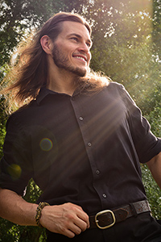
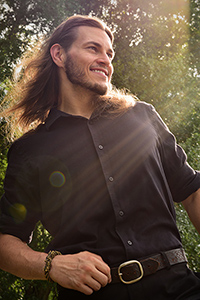

Welcome to my Resumé! My name is Kristina Bartholomew and I am a Graphic Designer and Photographer working part-time at Wallace Associates. I also do freelance work, with a focus on bringing client's visions to incredible life through photoshop and photography. I also have some experience in photo restoration and video editing.
You can reach me through Instagram, Facebook, and/or email.